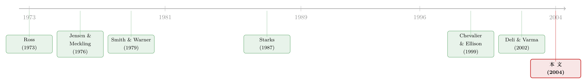

你把钱交给高手，又为什么把他的手绑起来？
本文读的是 Almazan, Brown, Carlson & Chapman (2004, Journal of Financial Economics)：在 1994–2000 年的美国国内股票型基金里，那些「不许做空、不许借钱、不许碰衍生品」的投资限制，并不是监管硬塞的，也不是随便定的；它们是一整套监督机制中可以互相替代的一块「积木」——当董事会、职业生涯、同行声誉这些「软约束」不够用时，契约就用「硬限制」来补。最干净的证据是：限制多的基金和限制少的基金，风险调整后收益没有差别。
1 一个自相矛盾的动作
先想象这样一个场景。你手里有一笔钱，自己不会打理，于是把它交给一位专业的基金经理。你之所以请专家，是因为你相信他比你更懂市场、更会选股、更会择时——一句话，你买的是他的判断力。
可是翻开这只基金的招股说明书，你会读到一长串「不许」：不许卖空个股、不许借钱加杠杆、不许买保证金、不许碰股票期权、不许做股指期货、不许持有限售股。你刚刚还在为他的本事买单，转过身却把他能用的工具一件件没收。
这就奇怪了。如果你信他，为什么要绑他的手；如果你不信他，又为什么把钱给他？
这篇论文要回答的，正是这个看似稀松平常、却几乎没人正面研究过的问题：投资者把钱托付给专业经理，然后又在合同里给他的行为套上枷锁——这些枷锁到底在起什么作用？
作者自己的话很直白：「Why do investors trust their funds to professional managers but then place constraints on their actions?」——把钱给你，又限制你，这本身就是个需要解释的悖论。
2 先排除一个最省事的答案：是监管逼的吗？
面对这个问题，一个自然的、也最偷懒的解释是：这些限制是法律规定的，基金没得选。
作者花了一整节来堵死这条路。诚然，从 1930 年代起，美国国会就立法规范基金运作，1940 年的《投资公司法》(Investment Company Act of 1940) 确实约束了基金的投资活动。但仔细读条文你会发现，它的措辞往往宽泛而留有余地。比如法案授权 SEC 监管卖空和保证金交易，可 SEC 偏偏选择不对这两项施加任何特别规定；又比如第 13(a) 条原文写着「未经多数股东投票同意，注册投资公司不得借款」，但后来的实践已经演变成基金可以routinely借到总资产的 33⅓%。
更关键的一条线索藏在「基本政策 (fundamental policy)」和「非基本政策 (non-fundamental policy)」的划分里。前者要改得股东投票，目的是给经理尽可能大的灵活性；后者由董事会自己就能调整，装的恰恰是那些更细、更「业务化」的限制（比如「国内组合一律不持国际证券」，哪怕基本政策允许）。换句话说，真正定义这只基金「能做什么、不能做什么」的，是投资者和经理自己谈出来的那部分，而不是法律的硬性禁令。
那监管是不是只是在「打底」，限制其实千篇一律？数据立刻否决了这个猜想。
3 限制不是随机的，也不是统一的
作者从 SEC 的 Form N-SAR（基金每年要报两次的半年报）第 70 题里，把六项限制的采用情况一条条扒出来，匹配上 CRSP 共同基金数据库，最终得到 1994–2000 年间 9,525 个基金-年观测，样本从 1994 年的 679 只增长到 2000 年的 1,838 只。这是一个覆盖面相当大的横截面。
把采用率铺开来看（全样本加权平均），结果一点都不「统一」：
- 保证金交易：
91.1%的基金被禁止； - 卖空：
68.9%； - 股指期货：
35.5%； - 个股期权：
25.2%； - 借款：
22.4%； - 限售证券：
17.9%。
从最严的九成到最松的不到两成，跨度极大。这说明限制绝不是被某条法律一刀切出来的——如果是，它们的采用率应该高度一致。
更有意思的是时间趋势：六项限制的采用率在样本期内全部下降了。把它们综合成一个「限制分数 (constraint score)」后，这个分数从 1994 年的 0.399 一路降到 2000 年的 0.335。而且越年轻的基金限制越少——1990 年后成立的「第三代」基金，在每一项限制和总分上，都不比更老的基金更受约束。
接着，一个自然的问题是：这个「限制分数」是怎么算的？
4 把「到底有多受限」压成一个数
「这只基金算受限还是不受限？」一旦把六项限制放在一起，这个问题就不再有简单答案——一个能借钱但不能做股指期货的经理，到底算被绑住了没有？
作者的处理很巧。他先把六项限制按经济含义归成三类：
- 杠杆类：借款、保证金、卖空（3 项）；
- 衍生品类：期权、股指期货（2 项）；
- 流动性类：限售证券（1 项）。
然后分两步构造分数：第一步，在每一类内部，按「这一类里有几项被限制」算一个类内比例；第二步，三类各占 1/3 的等权重。举个论文里的原例：如果一只基金在三项杠杆限制里被限了两项、两项衍生品里被限了一项、限售股可以随便持有，那它的分数就是
$$ \text{score} = \tfrac{1}{3}\cdot\tfrac{2}{3} + \tfrac{1}{3}\cdot\tfrac{1}{2} + \tfrac{1}{3}\cdot 0 = \tfrac{7}{18} = 0.389 . $$
按构造，分数落在 0 到 1 之间，越高表示越受限。作者还试过另一种加权方式（按「不受限的基金里有多大比例真的去用了这项工具」来定权重，即给那些「明明有用却被禁掉」的限制更高权重），结果两种分数的相关系数超过 0.99，所以正文只报告前一种。
有了这把统一的尺子，真正关键的一步才登场：把限制和基金的其他特征联系起来，看它到底在替什么东西工作。
5 真正的核心：限制是「监督」的一块替补
这里是全文的枢纽。作者的中心思想是：投资限制只是众多监督机制中的一种，它和债券契约里用来约束股东的保护性条款 (protective covenants) 如出一辙（这个类比直接来自 Smith and Warner, 1979）。既然是「之一」，它就应该和其他监督手段互为替代品——哪里别的监督不够，哪里就用硬限制来顶。
作者列出四种「替代性」的监督渠道，并给出可检验的预测：
- 直接监督——董事会。 外部董事被认为是更有效的监督者。如果董事会本身监督得力（外部董事多），就不那么需要硬限制；反过来，内部董事占比越高的基金，越该多用限制来补监督的缺口。
- 劳动力市场监督——职业生涯关切 (career concerns)。 经理越在乎自己的声誉和饭碗，就越会自我约束。所以经验越丰富的经理、以及团队管理 (team-managed) 的基金，限制应当越多——因为团队里每个人押上的个人声誉，都比单打独斗的明星经理要少。
- 同行监督——基金家族 (fund complex)。 大基金family内部存在「同行监督 (peer monitoring)」，彼此盯着以维护整个家族的声誉资本。所以不属于大家族的独立基金，反而更依赖硬限制。
- 产品市场监督——销售费用结构。 如果销售费 (load) 能起到筛选和监督作用，它就该和限制相关。
这套逻辑里最漂亮的，是它把一个「为什么要绑手」的问题，翻译成了一组关于「替代关系」的可证伪预测。（关于「基金家族为什么要替投资者做监督」这条线，可参见《替留下的人作证：基金家族为什么非得「炒掉」几个经理》。）
6 数据说了什么
实证结果几乎逐条对上了上面的预测：
- 董事会：内部董事占比越高，越可能采用投资限制——和「外部董事是更好的监督者」这一公司金融的老结论一致。
- 职业生涯：经理越有经验、基金越是团队管理，限制越多。前者印证了 Chevalier and Ellison (1999) 关于经理年龄的发现，后者则是本文的增量——团队成员各自押上的声誉更少，于是需要更多外部硬约束来补位。
- 基金家族：属于大型组织复合体的基金，用的限制相对更少，和「同行监督替代硬限制」吻合。
- 销售费：没有发现限制与 load 的有无或结构有关。四个渠道里，唯独产品市场这条没站住。
四中其三，方向都对。作者据此下了一个判断：这是最优契约 (optimal contracting) 在基金业里运作的证据——限制不是冗余的官僚条款，而是投资者和经理在权衡各种监督成本之后，达成的均衡选择。
7 最干净的一击：那它该不该影响业绩？
到这里，故事其实还差最后、也是最关键的一块拼图。
因为「限制是最优契约的一部分」这个论断，有一个非常强、非常可证伪的推论：如果每只基金都恰好采用了对它而言最优的那套限制，那么限制多的基金和限制少的基金，风险调整后的业绩就不该有系统性差异。 道理在于——受限多的基金，是因为它在别处（董事会、家族、经理声誉）省下了监督成本，二者刚好抵消；如果限制是「自损」的次优枷锁，受限的基金就该普遍跑输。
于是反转出现：作者用两种方法去检验业绩。
第一种是配对组合 (matched-fund)：构造零投资组合——做多相对不受限的基金、做空相对受限的基金，看这个多空组合有没有显著的超额收益。第二种是把基金收益和风险指标，对限制分数及一系列控制变量做多元线性回归。
两种方法给出同一个答案：限制程度的高低，在经济上和统计上都不显著地影响基金业绩。受限和不受限的基金，赚的风险调整后收益一样多。
这正是最优契约假说最想看到的结果。如果限制是「坏东西」，它本该在收益上留下伤疤；可它没有。换句话说，基金恰好采用了那套「不多不少、刚好够用」的限制，去凑成一份与投资者之间的最优合同。
这里要小心一个常见的误读：「业绩没差别」不等于「限制没用」。恰恰相反——正因为限制是按需、最优地配置的，它才不会在均衡里留下业绩差。一个真正多余或有害的约束，反而会让受限基金系统性跑输。
8 文献脉络
把这篇论文放回它的谱系里，线索其实很清楚。
源头是代理理论 (agency theory) 本身：Ross (1973) 提出委托人问题的经济学框架，Jensen and Meckling (1976) 把代理成本和所有权结构钉进了公司金融的地基，Fama (1980) 则把它接到「企业理论」上。（对这条主线感兴趣，可参见《债务这副药，为什么不能全吃？——重读 Jensen 和 Meckling 五十年》。）
紧接着是监督与契约设计这一支。Smith and Warner (1979) 研究债券契约里的保护性条款——这正是本文最直接的类比对象：投资限制之于基金经理，就像债务契约之于股东。

然后，基金业被当成研究代理问题的「实验室」。Starks (1987) 看激励费如何影响经理的冒险决策；Khorana (1996) 和 Chevalier and Ellison (1999) 研究基金经理的「职业生涯关切」——后者关于经理年龄的发现，被本文直接拿来对照和拓展。董事会这条线上，Hermalin and Weisbach (2003) 系统综述了董事会作为内生制度在解决代理问题中的角色。
但真正关键的一步，是把视角从「单一限制」扩展到「整套限制 + 替代性监督」。在本文之前，相关研究都聚焦在某一类工具上：Koski and Pontiff (1999) 和 Deli and Varma (2002) 关注基金用衍生品的能力，Clarke et al. (2002) 则讨论仓位与换手限制如何影响经理产出超额收益的能力。本文的位置，是第一次系统、全面地记录全套组合政策限制的横截面规律，并把硬限制和其他监督机制的替代关系打通——这是它自认的主要贡献。
9 评论与延伸（Q&A + 研究方向）
(a) 几个可能的疑问
Q：「业绩没差别」会不会只是检验太弱、power 不够，把真实差异淹没了？
这是最该警惕的点。零结果天然存在「证据不足 ≠ 不存在」的风险。作者用了配对多空组合和回归两套方法互相印证，且样本量很大（9,525 个基金-年），一定程度上缓解了 power 顾虑。但严格说，这仍是「未能拒绝」而非「证明相等」，把它当成最优契约的充分证据需要谨慎——它更适合作为与最优契约假说「相容」的旁证。
Q：限制和那些基金特征之间，会不会是反向因果或遗漏变量，而非「替代监督」？
完全可能。比如「内部董事多」和「限制多」也许同被某个未观测的「这家公司治理风格保守」所驱动，而非前者导致后者。本文是横截面相关性，没有外生冲击来识别因果。它给出的是「与最优契约一致的系统性模式」，而不是干净的因果链——这是它最大的识别软肋。
Q：限制采用率在 1994–2000 年一路下滑，这到底说明了什么？
作者没有把它当成核心结论，但它本身很有意思：要么是监督技术（数据、披露、家族内控）在进步，让硬限制变得没那么必要；要么是 1990 年代末牛市里，投资者对「放开手脚」的容忍度上升。论文倾向于前者的味道，但没有专门识别。这是一个被数据点出来、却没被解释透的现象。
Q：把六项限制等权压成一个 0–1 的分数，会不会丢掉太多信息？
加总必然损失结构信息——杠杆、衍生品、流动性三类的经济含义并不对等。作者的辩护是稳健性：换一种按「有用程度」加权的分数，相关系数仍超过 0.99，结论不变。但这只说明两种加总方式之间稳健，不代表「加总」这件事本身没问题。想看单项限制的异质效应，得回到分项回归。
Q：和债券契约里的保护性条款相比，基金限制的特殊之处在哪？
类比很贴切，但有一处不对称：债券契约的对手是债权人，索取的是固定现金流；基金投资者是剩余索取人，承担的是全部下行。所以基金限制要平衡的，不只是「防止经理掏空」，还有「别把经理的选股 / 择时本事也一起绑死」。本文的「业绩无差异」结果，恰恰说明这条平衡线被踩得不错。
Q：销售费 (load) 那条预测落空，是不是说「产品市场监督」根本不成立？
也未必。Load 的功能可能更多是补偿销售渠道、而非监督经理（Sirri and Tufano, 1998 强调的是它对资金流的影响）。所以「load 与限制无关」可能只是说明 load 不是一个监督工具，而不是产品市场不重要。这是四个渠道里证据最弱的一条，留了余地。
(b) 几个可能的研究问题与提案
1. 用基金家族的外生重组做一次因果识别。 【经济故事】本文最大的弱点是横截面相关性。如果能找到一次让基金「突然加入 / 退出大家族」的外生事件（如基金公司被并购、family 拆分），就能检验「同行监督替代硬限制」是否真有因果：被并入大家族后，基金会不会主动放松自己的投资限制？ 【可行性】中。N-SAR 的限制数据是逐年的面板，基金公司并购事件可从 SEC 文件和新闻里手工识别，做交错双重差分 (staggered DiD)。难点在样本量和处理时点的清洁度——可参见《当「对手」就坐在自家屋檐下：被动基金如何逼着主动基金跑得更快》对家族内竞争的处理思路。
2. 把这套「限制即监督」框架搬到公司债 / 信用市场。 【经济故事】本文的灵感本就来自债券契约。反过来，可以用基金对「持有限售股 / 流动性资产」的限制，去解释债券基金在危机里的脆弱性：流动性限制更松的债基，是不是在 2008 或 2020 的甩卖里跌得更惨？这把「监督」和「流动性风险」接到了一起。 【可行性】高。N-SAR 限制数据 + 债券基金持仓（如 Morningstar / CRSP）+ 危机窗口的净值与赎回，识别上可用危机当成准自然实验。和《基金越难脱手，它手里的债券越「抖」》是天然的对话对象。
3. 团队管理 vs. 单一经理，限制差异是否真由「声誉分摊」驱动？ 【经济故事】本文发现团队基金限制更多，并解释为「团队成员各自押的声誉更少」。但团队也可能意味着决策更稳健、更难协调激进策略。能不能找一个变量把这两种机制分开？比如团队成员的资历分散度、或团队规模。 【可行性】中。需要经理层面的传记数据（Morningstar 经理库），把「团队声誉分摊」操作化是关键难点，识别偏定性。
4. 限制的「时间下滑」之谜：是监督技术进步，还是风险偏好抬升？ 【经济故事】1994–2000 限制全面松动，恰逢互联网牛市与披露技术升级。把宏观市场状态、家族内控投入、披露环境分别作为解释变量，看到底是哪一股力量在松绑经理的手。 【可行性】中。需要构造监督技术的代理变量（较难），市场状态易得；可能更适合做描述性 + 面板回归，因果识别偏弱，诚实说 doable 但难出强结论。
5. 外资持有人与基金限制的互动。 【经济故事】如果一只基金的投资者结构里外资占比更高（信息更远、监督更难），它会不会被施加更多硬限制来补监督缺口？这把本文的「替代监督」逻辑接到了外资—信息不对称这条线上。 【可行性】低到中。难点在拿到基金层面的投资者地理结构数据，N-SAR 不直接提供；可能要借道跨境基金或 ADR / cross-listing 场景间接逼近。
10 我的判断
这篇论文的贡献，在于它第一次把基金投资限制当成一个值得认真对待的契约对象来研究，而不是顺手一提的脚注。它最聪明的设计有两处：一是把「为什么绑手」翻译成一组关于「替代性监督」的可证伪预测，四中其三对上；二是用「业绩无差异」这个反直觉的零结果，给最优契约假说提供了一个难能可贵的、方向正确的旁证——多数论文怕零结果，这篇论文恰恰需要零结果。
但它的软肋也很明显，且作者并未完全回避：全文是横截面相关，没有外生变异来支撑因果。「内部董事多 → 限制多」与「某种保守治理文化同时驱动两者」在数据上无法区分；「业绩无差异」也始终是「未能拒绝」而非「证明相等」，把它读成最优契约的硬证据需要克制。此外，限制采用率一路下滑这个相当醒目的事实，被点出来却没被解释透。
接下来我最想看到的，是有人拿一次基金家族的外生重组、或一场流动性危机，把这套「限制即监督」的框架放进一个真正能识别因果的设计里——尤其是在公司债与债券基金的流动性维度上。那会让「为什么绑手」从一个优雅的相关性故事，变成一条经得起反事实拷问的因果链。
参考文献
- Almazan, A., Brown, K. C., Carlson, M., & Chapman, D. A. (2004). Why constrain your mutual fund manager? Journal of Financial Economics 73(2), 289–321.
- Brown, S. J., Goetzmann, W., Ibbotson, R. G., & Ross, S. A. (1992). Survivorship bias in performance studies. Review of Financial Studies 5(4), 553–580.
- Chevalier, J., & Ellison, G. (1999). Career concerns of mutual fund managers. Quarterly Journal of Economics 114(2), 389–432.
- Clarke, R., de Silva, H., & Thorley, S. (2002). Portfolio constraints and the fundamental law of active management. Financial Analysts Journal 58(5), 48–66.
- Deli, D. N., & Varma, R. (2002). Contracting in the investment management industry: evidence from mutual funds. Journal of Financial Economics 63(1), 79–98.
- Fama, E. F. (1980). Agency problems and the theory of the firm. Journal of Political Economy 88(2), 288–307.
- Hermalin, B., & Weisbach, M. (2003). Board of directors as an endogenously determined institution: a survey of the economic literature. Federal Reserve Bank of New York Economic Policy Review 9(1), 7–26.
- Jensen, M. C., & Meckling, W. H. (1976). Theory of the firm: managerial behavior, agency costs, and ownership structure. Journal of Financial Economics 3(4), 305–360.
- Khorana, A. (1996). Top management turnover: an empirical investigation of mutual fund managers. Journal of Financial Economics 40(3), 403–427.
- Koski, J. L., & Pontiff, J. (1999). How are derivatives used? Evidence from the mutual fund industry. Journal of Finance 54(2), 791–816.
- Ross, S. A. (1973). The economic theory of agency: the principal's problem. American Economic Review 63(2), 134–139.
- Smith, C., & Warner, J. B. (1979). On financial contracting: an analysis of bond covenants. Journal of Financial Economics 7(2), 117–162.
- Starks, L. T. (1987). Performance incentive fees: an agency theoretic approach. Journal of Financial and Quantitative Analysis 22(1), 17–32.